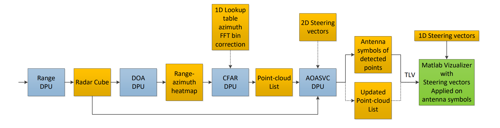
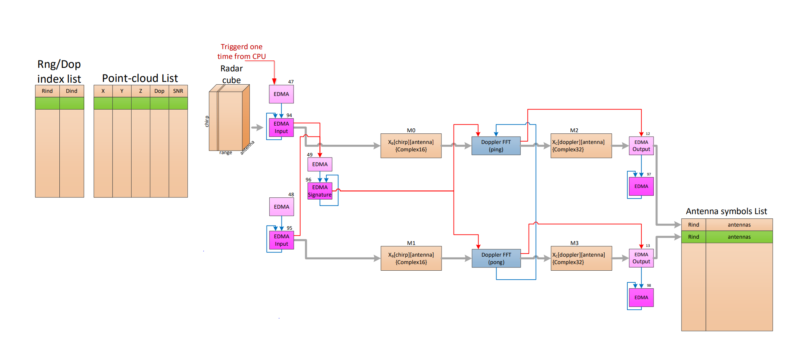

Introduction
The AOASVC DPU provides angle of arrival estimation correction functionality for the xWRLx432AOP device. Steering vectors are mathematical representations of the expected phase and amplitude responses from each antenna element for a signal arriving from a specific direction. This DPU is integrated into the Motion and Presence demo for the xWRLx432AOP.
The AOASVC DPU can be added onto the motion and presence detection chain for the xWRL6432AOP for two main reasons:
- To improve the overall accuracy of the angle estimation of the device
- To eliminate wraparound errors, where points on one side of the field of view (FOV) appear on the opposite side. While this is not essential for basic device operation, this correction can enhance the accuracy of angle measurements near the boundaries of the field of view.
Block Diagram
The top-level block diagram of the DPU is shown in the figure below.

AOASVC processing DPU top-level diagram
IMPORTANT NOTE: Antenna symbols TLV is not supported in SDK visualizer.
This DPU performs the following two steps:
- Computation of antenna symbols (antenna symbols are the complex values obtained for each virtual antenna(numTxAntennas* numRxAntennnas) after performing range and Doppler processing on the radar data) for every detected point in the point cloud-list. For each detected point, the antenna symbols corresponding to the detected point’s range index are pulled from the radar cube, and the Doppler FFT is computed for each antenna. The symbols corresponding to the detected point’s Doppler index, are extracted and saved to a separate list. Optionally, the list is streamed out to the visualizer as a separate TLV.
- Correlation of the prestored steering vectors with the computed antenna symbols for each detected point. This process creates a 2D azimuth-elevation heatmap, and based on the peak position in the generated heatmap, it corrects the X/Y/Z coordinates of the points in the point-cloud list. This step is optional when only the antenna symbols of the detected points are needed in the motion and presence detection chain for the xWRL6432AOP device. This feature can be enabled/disabled via the CLI command "steerVecCorr".
Modification of the DOA DPU to allow for larger elevation FFT sizes by altering the order of the Doppler and elevation dimension reduction. This feature is optional and can be enabled/disabled via the CLI command "elevDopplerDimRedOrder". When enabled, during the elevation FFT computation, only the FFT output peak and the peak index are saved, instead of the full FFT output array.
Optionally performs azimuth and elevation angle correction in the CFAR DPU based on the lookup table approach. This feature can be enabled/disabled via the CLI command "lutCorrectAzimElevDom". The lookup table is pre-stored table containing azimuth and elevation FFT bin index corrections, based on the azimuth/elevation FFT peak position.
NOTE: For more details on usage of CLI commands refer to Demo documentaion Motion and Presence Detection OOB Demo
AOASVC DPU Functioning
The AOASVC DPU processing is executed per frame, and it is split in two steps:
- Generation of the antenna symbols of detected points
- Correlation with steering vectors, and update of the coordinates of detected points
Generation of the antenna symbols
The detailed block diagram of the DPU’s first step processing is shown in Figure below. The processing is executed for each detected point in the point-cloud list. Each detected point in the point-cloud list is accompanied with the side information including range and Doppler indices in the side information list. The processing is done in a ping pong manner: while the HWA processes the point in the ping path, the EDMA loads the symbols of the next point from the radar cube to the pong path.

AOASVC DPU, the first step processing block diagram – generation of the antenna symbols list
The timing diagram below illustrates the sequence of operations, where the numbers 1, 2, 3, and 4 represent different parameter sets used by the HWA and EDMA.

AOASVC DPU, the first step processing timing diagram
The processing always handles the even number of points. If the number of points in the point-cloud list is odd, additional dummy point is processed but disregarded in the output antenna symbols list. The output list can be optionally streamed out as TLV to the visualizer.
Correlation with the steering vectors
If the second processing step is enabled, for each detected point, the DPU computes the azimuth-elevation heatmap using a steering vector correlation approach. Based on the maximum peak, it recalculates the X/Y/Z coordinates of the point and updates the point-cloud list. The block diagram for this step is depicted in Figure below:

AOASVC DPU, the first step processing timing diagram
Correlation of the antenna symbols with the steering vectors is executed by HWA using the vector multiplication mode. The steering vectors are loaded into the HWA memory banks, occupying up to three memory banks depending on the size of the set of steering vectors. The antenna symbols are loaded into the internal HWA RAM. The steering vectors are precompiled and built with the demo image. The vectors are stored in the file aoasv_table.c located in the same folder with AOASVC DPU source code: mmwave_lp_sdk/source/datapath/dpu/aoasvcproc/v0. The vectors are of type complex signed int 16-bit in Q15 format, stored in int16_t array SteeringVectors[]. The order of the indices is of the steering vectors are (assuming C indexing order) [elevation index][azimuth index][antenna index]. In addition to the array, the structure steeringVecParams is defined as -
typedef struct steeringVecParams_t
{
float azimuthStartDeg;
float azimuthStepDeg;
float elevationStartDeg;
float elevationStepDeg;
float azimSign;
float elevSign;
and should be initialized according to the included steering vector set. For example, for the 2D set with azimuth/elevation grid defined as azimuth: [-80deg:2.5deg:80deg] and elevation: [-60deg:5deg:60deg], the structure is initialized as:
.azimuthStepDeg = 2.5,
.elevationStartDeg = -60,
.elevationStepDeg = 5,
.azimSign = -1,
.elevSign = 1
};
Correlation with steering vectors – execution steps
Per frame the prestored steering vectors are loaded once into the HWA memory banks. Then in the loop, for each detected point, the CPU performs the following steps:
- Load antenna symbols from the antenna symbol list into the internal HWA memory
- Trigger the HWA to execute two parameter sets:
- Correlate with steering vectors to generate an azimuth-elevation heatmap
- Find the magnitude maximum in the azimuth-elevation heatmap
- Calculate azimuth and elevation angles based on the magnitude maximum
- Perform interpolation along azimuth and elevation directions
- Compute X/Y/Z coordinates and update the original values in the point-cloud list
The AOASVC DPU is configured with the CLI command - steerVecCorr, Refer Motion and Presence Detection OOB Demo for more details.
An alternate approach to Steering Vectors Correction is implemented inside the CFAR DPU. The azimuth-elevation angle correction is based on the lookup table. The correction is performed in azimuth and elevation FFT output domain. Currently, a 64-point azimuth correction lookup table is created and precompiled within the image. The table remains valid only when the azimuth FFT size is set to 64. The table azimBinCorrArrayQ4[] is located inside the cfarprochwa.c file and is stored as int8_t type in Q4 format. The values in the table represent corrections for azimuth FFT output bins. The table is extended to cover 16 elevation levels (replicated rows). Additionally, a 64x16 dummy table for elevation correction is included, currently initialized with all zeros, named elevBinCorrArrayQ4[]. The lookup table approach is enabled with a new parameter included in the CFAR CLI configuration command(lutCorrectAzimElevDom).
Limitations
- The AOASVC DPU should ONLY be used on radar devices using antenna-on-package technology (xWRLx432AOP)
- The configuration file used with the AOASVC DPU must have the following options selected:
- Center Frequency must be approx. 61 GHz. This is set by startFreq in ChirpTimingCfg and the chirp bandwidth set in the chirpTimingCfg and chirpComnCfg.
- sigProcChain must use option 2 for combining across doppler (Non-coherent integration along Doppler dimension to create the detection matrix (rangeangle heatmap), and find maximum peak index to estimate the Doppler in the point cloud.) This is set by sigProcChainCfg x x x 2 x x x x x
Usage Overview
API
To exercise the DPU functionalities, the application shall call the following APIs in sequence
- DPU_AoasvcProc_init(): This function allocates memory for the AOASVC DPU instance and initializes it to zero. It also constructs the semaphores used for processing.
- DPU_AoasvcProc_config(): Based on the configuration parameters, this function configures hardware accelerator engine accordingly. It also configures data input and output EDMA channels to bring data in and out of HWA memory. The function is typically called one time before the sensor start command is issued to the RF. In the low power deep sleep (LPDS) mode, the function is called per frame.
- DPU_AoasvcProc_process(): Enables the supported run-time config and triggers the processing for the DPU
- DPU_AoasvcProc_deinit(): De-initializes and frees up the allocated DPU resources
Example Usage
Include the below file to access the APIs
DPU Initialization Example
if (gMmwMssMCB.aoasvcProcDpuHandle == NULL)
{
CLI_write ("Error: AoasvcProc DPU initialization returned error %d\n", errorCode);
return;
}
DPU Configuration Parsing Example
int32_t retVal = 0;
float slope;
hwRes = &aoasvcProcDpuCfg.hwRes;
aoasvcStaticCfg = &aoasvcProcDpuCfg.staticCfg;
aoasvcStaticCfg->
numAntRow = gMmwMssMCB.numAntRow;
aoasvcStaticCfg->
numAntCol = gMmwMssMCB.numAntCol;
aoasvcStaticCfg->
numTxAntennas = (uint8_t) gMmwMssMCB.numTxAntennas;
aoasvcStaticCfg->
numRxAntennas = (uint8_t) gMmwMssMCB.numRxAntennas;
aoasvcStaticCfg->
numVirtualAntennas = (uint8_t) (gMmwMssMCB.numTxAntennas * gMmwMssMCB.numRxAntennas);
slope = (float)(gMmwMssMCB.chirpSlope * 1.e12);
aoasvcStaticCfg->
rangeStep = (MMWDEMO_RFPARSER_SPEED_OF_LIGHT_IN_METERS_PER_SEC * (gMmwMssMCB.adcSamplingRate * 1.e6)) /
{
{
if ((gMmwMssMCB.frameCfg.h_NumOfBurstsInFrame > 1) && (gMmwMssMCB.frameCfg.h_NumOfChirpsInBurst == 2))
{
}
else if (gMmwMssMCB.frameCfg.h_NumOfBurstsInFrame == 1)
{
}
else
{
goto exit;
}
}
else
{
aoasvcStaticCfg->
numDopplerChirps = gMmwMssMCB.sigProcChainCfg.numFrmPerMinorMotProc * gMmwMssMCB.sigProcChainCfg.numMinorMotionChirpsPerFrame;
}
}
else
{
if (gMmwMssMCB.frameCfg.h_NumOfBurstsInFrame != 1)
{
goto exit;
}
{
}
else
{
aoasvcStaticCfg->
numDopplerChirps = gMmwMssMCB.sigProcChainCfg.numFrmPerMinorMotProc * gMmwMssMCB.sigProcChainCfg.numMinorMotionChirpsPerFrame;
}
}
aoasvcStaticCfg->
azimuthFftSize = gMmwMssMCB.sigProcChainCfg.azimuthFftSize;
aoasvcStaticCfg->
elevationFftSize = gMmwMssMCB.sigProcChainCfg.elevationFftSize;
hwRes->
radarCube[0] = gMmwMssMCB.radarCube[0];
hwRes->
radarCube[1] = gMmwMssMCB.radarCube[1];
edmaCfg->
edmaIn[0].
channel = DPC_OBJDET_DPU_AOASVCPROC_EDMAIN_PING_CH;
edmaCfg->
edmaIn[0].
eventQueue = DPC_OBJDET_DPU_AOASVCPROC_EDMAIN_PING_EVENT_QUE;
edmaCfg->
edmaIn[1].
channel = DPC_OBJDET_DPU_AOASVCPROC_EDMAIN_PONG_CH;
edmaCfg->
edmaIn[1].
eventQueue = DPC_OBJDET_DPU_AOASVCPROC_EDMAIN_PONG_EVENT_QUE;
edmaCfg->
edmaOut[0].
channel = DPC_OBJDET_DPU_AOASVCPROC_EDMAOUT_PING_CH;
edmaCfg->
edmaOut[1].
channel = DPC_OBJDET_DPU_AOASVCPROC_EDMAOUT_PONG_CH;
hwaCfg->
dmaTrigSrcChan[0] = DPC_ObjDet_HwaDmaTrigSrcChanPoolAlloc(&gMmwMssMCB.HwaDmaChanPoolObj);
hwaCfg->
dmaTrigSrcChan[1] = DPC_ObjDet_HwaDmaTrigSrcChanPoolAlloc(&gMmwMssMCB.HwaDmaChanPoolObj);
DPU Configuration Example
if (retVal < 0)
{
CLI_write("AOASVC DPU config return error:%d \n", retVal);
}
DPU Process Trigger Example
numDetectedPoints[MMW_DEMO_MAJOR_MODE],
numDetectedPoints[MMW_DEMO_MINOR_MODE],
gMmwMssMCB.cfarDetObjOut,
gMmwMssMCB.dpcObjIndOut,
&outParmsAoasvcproc);
if(retVal != 0){
CLI_write("DPU_AoasvcProc_process failed with error code %d", retVal);
}
DPU Close Example
if(retVal < 0)
{
DebugP_log(
"AOASVCProc DPU deinit error %d\n", retVal);
}
 1.8.20
1.8.20